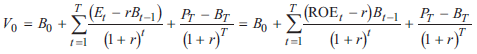
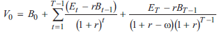

--------------------
Residual Income
--------------------
- 剩余收入也叫经济利润
- capital charge = Equity charge + debt charge
- economic value added, EVA = 税后营运净利润 NOPAT - cost of capital c% × TC total capital
- NOPAT仅有营运部分, 所以非营运部分需要加回
- R&D, 未开始营收之前的资本投入suspend, 递延税, LIFO库存和reserve
- 营运租记为资本租
- 非经常项目调整
- market value added, MVA = MV - BV of total capital
--------------------
RI model
--------------------
- General RI model
- 一个阶段的RI valuation
- 基于持续经营的GGM, 假设RI永续增长
- V0=B0+(ROE-r)/(r-g)×B0
- 若ROE>r, P0>B0, P/B>1
- 若ROE=r, P0=B0, P/B=1
- 若ROE<r, P0<B0, P/B<1
- 多阶段RI valuation
- RI永续增长不合理
- 
- ω - persistence factor
- 自T年以后, 按1+r-ω为折现率, ω∈[0,1]
- 
- ω高
- ω低
- 目前ROE高, 不可持续
- 公司有大量的非经常项目
- 会计应计账目多, 可能存在粉饰财报
- RI model 优点
- 内在价值受终值影响小
- 数据易得
- 适用无分红, 无正FCF, FCF波动大的项目
- 更关注经济利润
- RI model 缺点
- 依赖会计数据, 易受管理层操控
- 会计数据受大量调整
- BS
- 库存
- 递延税(资产/负债)
- 运营租
- reserves & allowances
- 无形资产
- nonrecurring
- unusual
- extraodinary
- restructing charges
- 不在持续经营的项目
- accounting changes
- 假设干净盈余关系, 适用少
- 假设利息费用正确反映债务成本
- 适用于
- 无分红或分红波动大的公司
- 未来FCF可能为负
- 终值不能可靠计量
- 不适用于
- 干净盈余关系 clean surplus 显然被违反
- 融资项目的未确认的变化
- 外汇调整
- 某些 pension 调整
- PPE和IFRS下的无形资产surplus重定价的改变
- IFRS下某些类别的负债由于信用风险引起的fair value FV变化
- BV, ROE难以预测
--------------------
Next Chaptor